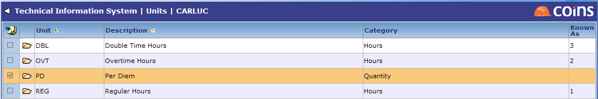
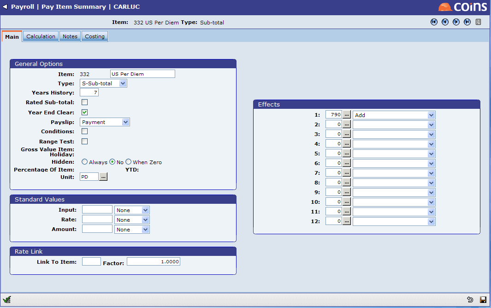
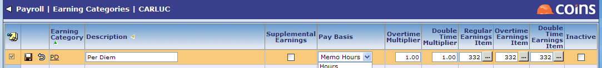
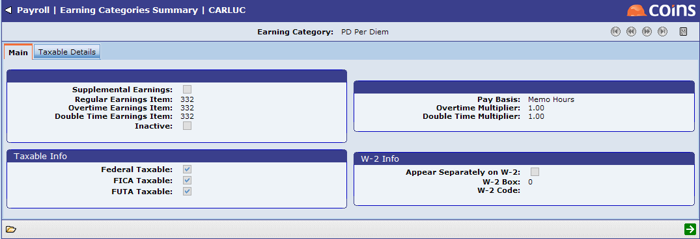
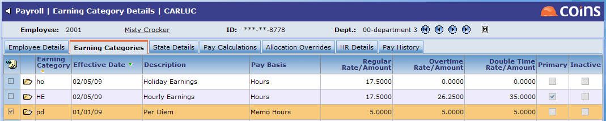
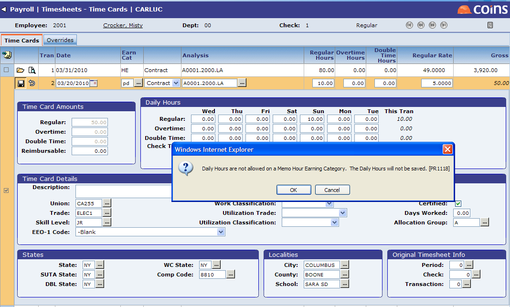
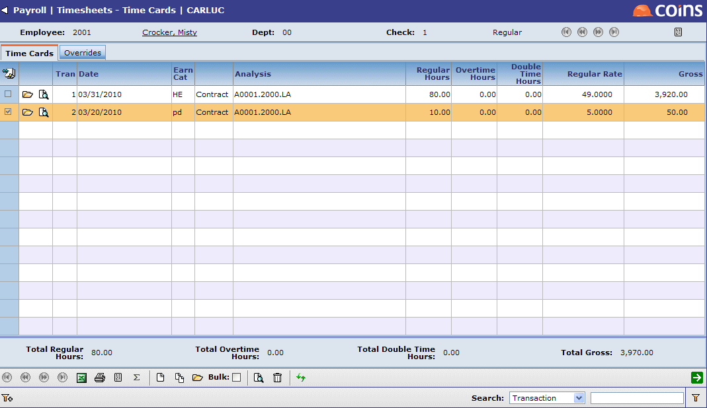
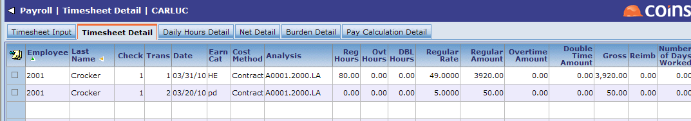
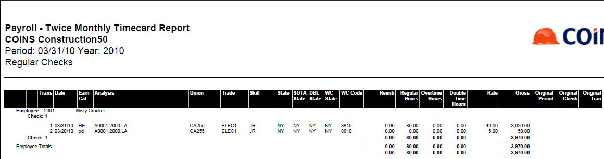
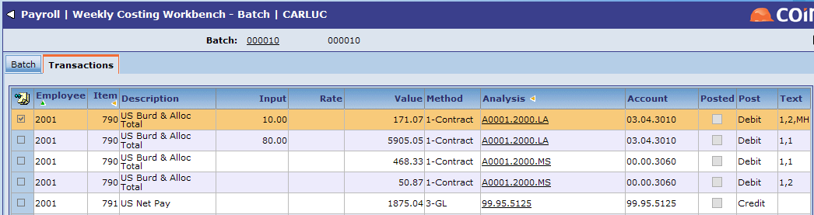

| ***NOTE: THIS IS A US SPECIFIC TOPIC.*** |
The Memo Hours Earning Category in
Payments made via Memo Hours have no effect on Regular Hours, Overtime Hours, Double Time Hours, Hours Worked ,or Hours Paid in Payroll. Memo Hours will not appear on the
The section below provides you with information on how to set up and use Memo Hours.
Set Up Pay Item for Memo Hours
The Pay Items can be set up to hold Hours for reporting on
To define the unit, go to Units.

Next, add a Pay Item for each new Memo Hours based Earning Category. The Pay Item Type is Subtotal, Unit should be defined, and you should not have any costing. Be sure to include its effects in the Total Gross and Burdened

Set Up Earning Category for Memo Hours
In Earning Categories, create an earning category whose Pay Basis is Memo Hours. Generally, the overtime and double time multipliers will be 1. Designate a pay item to hold the value associated with a payment made using Memo Hours.

Earning Categories set up as Memo Hours are limited to a Pay Basis of Rate per Hour which is entered during Time Sheet Entry. These types of earnings may be taxable or nontaxable as required and can appear separately on the W2.

You may enter the Memo Hours Earnings Category into the Employee File, Union Rate File, or Contract Rate File with effective dates if required. The Rate will default to the timecard and can be overwritten during entry.

Timesheet Entry
When using the Memo Hours based Earning Category, enter units under Regular Hours. You will not be allowed to distribute these hours daily, since they will have no effect on Certified Reporting.

Memo Hours are not included in the hours subtotals on Timesheet Input screens and



Memo Hours are displayed on the Costing Workbench and tagged with text that consists of

All other reports in